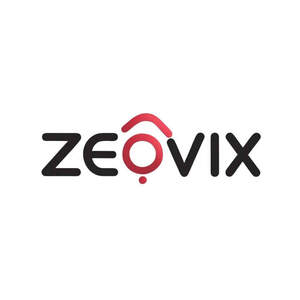

Trade Mark Journal No.2025/037 12 September 2025
UK00004258926 3 September 2025 (9)

- Class 9
- Cases for PDAs; Cases for smartphones; Cases for diskettes; Eyeglass cases; Cases (Eyeglass -); Cases for eyeglasses; Cases for spectacles; Cases for telephones; Sunglass cases; Cases for headphones; Eyewear cases; Cases for eyewear; Cases for sunglasses; Glasses cases; Cases for loudspeakers; Laptop cases; Battery cases; Camcorder cases; Cases (Pince-nez -); Pince-nez cases; Lens cases; Phone cases; Computer cases; Spectacle cases; Camera cases; Protective cases for laptops; Protective cases for smartphones; Leather cases for smartphones; Boxes [cases] for sunglasses; Carrying cases for radios; Boxes [cases] for glasses; Cases adapted for cameras; Computer carrying cases; Cases adapted for computers; Waterproof cases for smartphones; Laptop carrying cases; Beeper carrying cases; Mobile phones; Cell phones; Cellular phones; Chargers for mobile phones; Batteries for mobile phones; Keyboards for mobile phones; Cases for mobile phones; Straps for mobile phones; Batteries for phones; Devices for hands-free use of mobile phones; Smart phones; VOIP phones; Holders adapted for cell phones and smartphones; Internet phones; Lanyards for cell phones; Wireless headsets for mobile phones; Displays for mobile phones; Braille mobile phones; Hands-free headsets for cell phones; Straps for cellular phones; Headphones for smart phones; Holders for cell phones; Software for mobile phones; Hands-free microphones for cell phones; Wireless headsets for smart phones; Battery chargers for mobile phones; Digital phones; Digital cellular phones; Ear phones; Leather cases for mobile phones; Hands-free holders for cell phones; Mobile telephones; Headsets for mobile telephones; Chargers for mobile telephones; Video phones; Downloadable emoticons for cell phones; Carrying cases for mobile phones; Carriers adapted for mobile phones; Screen protectors for cell phones; Smartphones; Hands-free kits for cell phones; Dashboard mats adapted for holding cell phones and smartphones; Mobile phone chargers; Anti-dust plugs for cell phones; Downloadable ringtones for mobile phones; Ring holders for cell phones; Auxiliary batteries for mobile phones; Display modules for mobile phones; Protective cases for mobile phones; Downloadable emoticons for mobile phones; Earphones for cellular telephones; Displays for smart phones; Conference phones; Flip covers for mobile phones; Holders adapted for mobile telephones and smartphones; Carrying cases for cell phones; Wearable smart phones; Straps for mobile telephones; Cases adapted for mobile phones; Wireless headsets for use with mobile telephones; Mobile telephones for use in vehicles; Leather cases for cellular phones; Cameras for smartphones; Computer software for mobile phones; Downloadable wallpapers for computers and phones; Mobile phone cases; Carrying cases for cellular phones; Docking stations for mobile phones; Holders adapted for mobile phones; Dashboard mounts for mobile phones; Downloadable ring tones for mobile phones; Lanyards for mobile telephones; Headsets for smartphones; Downloadable graphics for cell phones; Mobile phone speakers; Auxiliary speakers for mobile phones; Chargers for cell phone; Chargers for smartphones; Wireless headsets for cellphones; Mobile phone straps; Downloadable ring tones for cell phones; Screen protectors for mobile telephones; Ring stands for cell phones; Cellular telephones; Dustproof plugs for jacks of mobile phones; Protective cases for cell phones; Mobile phone connectors for vehicles; Flip covers for cellular phones; Stands adapted for mobile phones; Mobile telecommunications handsets; Waterproof cases for smart phones; Telephones; Mobile phone battery chargers; Wireless headsets for smartphones; Earphones for smartphones; Downloadable graphics for mobile phones; Mobile radios; Tri-band telephones; Headsets for telephones; Dashboard mats adapted for holding mobile telephones and smartphones; Cell phone battery chargers for use in vehicles; Mobile phone screen protectors; Electronic game software for mobile phones; Ring holders for mobile telephones; Mobile phone covers; Straps for telephone handsets; Cell phone cases; Protective covers for cell phones; Cell phone straps; Smart phones in the form of eyewear; Mobile computers; Keyboards for smartphones; Carrying cases for mobile telephones; Cell phone battery chargers; Earphones for use with mobile telecommunication devices; Mobile phone ring holders; Downloadable software applications for mobile phones; Downloadable emoticons for mobile telephones; Batteries for use with mobile telecommunication devices; Mobile telephone batteries; Wireless telephones; Display screen protectors in the nature of films for mobile phones; Downloadable ring tones for mobile telephones; Wireless portable printers for use with laptops and mobile devices; Gender changers [cable adapters] for cell phones; Flip covers for smart phones; Battery chargers for use with telephones; Ring stands for mobile telephones; Wireless headsets for tablet computers; Power supplies for smart phones; Keyboard cases for smartphones; Carrying cases for cellular telephones; Carrying cases for mobile computers; Mobile telephone cases; Cases for tablet computers; Cellular telephone cases; Waterproof smartphone cases; Protective cases for tablet computers; Leather cases for tablet computers; Cases adapted for tablet computers; Cases for music storage devices; Tablet computer cases; Cases for satellite navigation devices; Cases for pocket calculators; Cases for data storage devices; Cases adapted for netbook computers; Cases for smartphone incorporating a keyboard; Cases adapted for notebook computers; Waterproof camera cases; Cases for electronic diaries; Tempered glass screen protectors for smartphones; Mobile phone display screen protectors in the nature of films; Screen savers; Smartphone screen magnifiers; Eye protectors; Screens; Anti-glare screens; Downloadable screen savers for phones; Display screen filters; Surge protectors; Filter screens for computer screens; Touch screen pens; Computer screen filters; Overvoltage protectors; Monitor screens; Display screen filters adapted for use with tablet computers; Display screen filters adapted for use with televisions; Projector screens; Downloadable screen savers for computers; Capacitive styluses for touch screen devices; Expandable screen smartphones; Teeth protectors; Display screen filters adapted for use with computer monitors; Screen filters for computers and televisions; Touch screens; Display screens; Power line protectors; Protective films adapted for computer screens; Mouth protectors [gum shields]; Computer screens; Telephone sets with screen and keyboard; LED screen displays; Flat panel electroluminescent display screens; Protective films adapted for mobile phone screens; Film screens; Voltage surge protectors; Protectors (Voltage surge -); Pens with conductive point for touch screen devices; Interactive touch screen terminals; Computer screen saver software; Holographic screens; Projection screens; Filters for television screens; Anti-glare filters for televisions and computer monitors; Protective films for tablet computers; Protective screens [asbestos] for firemen; Current overload protectors; Video display screens; Visual display screens; LCD panels; Protective covers for tablet computers; Elbow protectors (protective -) for use against accidents [other than sports articles]; Screens for photoengraving; Selenium voltage surge protectors; Fluorescent screens; Screens [photography]; Extension leads; Phone extension leads; Electrical extension leads; Electric extension leads; Extension leads [electric]; SCART leads; Jump leads; Multimeter leads; Electric leads; Test leads; Battery leads; Cable jump leads; Sounding leads; Ignition leads; Extension cords; Test leads [Electrical]; Extension cables; Earth test leads [Electrical]; Phone extension jacks; Electric extension cables; Electrical power extension cords; Led displays; LED displays; LED position sensors; LED monitors; High tension connectors for spark plugs; Direct current converters; Step down transformers; Plug connections [electric]; Connection blocks [electric cable]; Connection plugs (Electric -); LED drivers; Laptops [computers]; Laptop computers; Netbooks [computers]; Netbook computers; Convertible laptops; Sleeves for laptops; Hybrid laptops; Notebook computers; Battery chargers for laptop computers; Touchpads for computers; Cooling pads for laptop computers; Laptop bags; Bags adapted for laptops; Tablet computers; Desktop computers; Computers; Headsets for use with computers; Battery chargers for tablet computers; Portable computers; Speakers for computers; Palmtop computers; Covers for tablet computers; Monitors for computers; Mouses for computers; Printers for computers; Printers for use with computers; Computers (Printers for use with -); Adjustable desktop mounts for tablet computers; Stands adapted for laptops; Software for tablet computers; Laptop sleeves; On-board computers; Handheld computers; Laptop covers; Computer motherboards; Wearable computers; Computers for use with bicycles; Hand-held computers; Computer touchscreens; Components for computers; Keyboards for tablets; Peripherals adapted for use with computers and other smart devices; Input devices for computers; Mainframes [computers]; Computers and computer hardware; Electronic notebooks; Interfaces for computers; USB cables for cellphones; Cooling pads for wireless computers; Peripherals adapted for use with computers; Trackballs [computer peripherals]; Computer chipsets; Notebook computer carrying cases; Pocket computers for note-taking; Computer whiteboards; Computer styluses; Flip covers for tablet computers; Computer keyboards; Wireless computer peripherals; Stands adapted for tablet computers; Electronic components for computers; Software for computers; Notebook computer cooling pads; Programs for computers; Computer mousepads; Document printers for computers; Document printers for use with computers; Computer peripherals; Wireless remote controls for portable electronic devices and computers; Stick computers; Add-on-cards for computers; Tablet computer; Wearable computer peripherals; Cartridges [software] for use with computers; Peripheral equipment for computers; Notebook PCs; Handheld personal computers; Personal computers; Laptop docking stations; Foldable smartphones; Wireless charging pads for smartphones; Tablet monitors; Trip computers; Covers for computer keyboards; Wireless keyboards; Games software for use with video game consoles; Computer games programs; Joysticks for use with computers, other than for video games; Video games cartridges; Educational software featuring instructions for playing games; Games cartridges for use with electronic games apparatus; Game programs for arcade video game machines; Games software; Audiovisual headsets for playing video games; Downloadable interactive entertainment software for playing computer games; Downloadable computer games; Downloadable interactive entertainment software for playing video games; Interactive multimedia software for playing games; Games software for use with computers; Programs for arcade video game machines; Cell phone covers; Camcorder waterproof cases; Cases for contact lenses; Mobile telephone cases made of leather or imitations of leather; Contact lens cases; Boxes [cases] for contact lenses; Carrying cases for contact lenses; Phone plugs; Memory card cases.
BAGHKHAN LTD